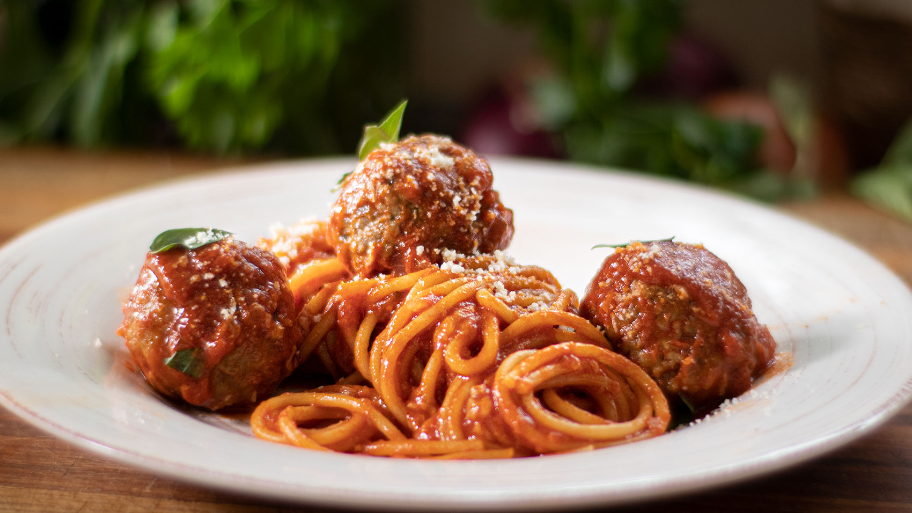

Description
This is a delicious italian classic for those that are on a budget and need to throw together a plate for dinner with only a couple of cheap ingrediants in not much preparation time.
BOAB spaghetti is a perfect go-to meal for ballers on a budget. With this recipe you can make a delicious dish for roughly 1.50$ worth of ingrediants in under an hour.
Ingrediants
- Spaghetti noodles
- Your choice of marinara or spaghetti sauce
- Grated parmesan cheese
- (Optional for the rich ballers that want to treat themselves) 1 package of frozen meatballs
Steps
- (For adding meatballs preheat oven to 400 degrees farrenheit. Coat meatballs in cooking oil and place and an oven safe baking pan. Place pan on middle oven rack and cook for 20 minutes. Add to spaghetti dish.)
- Turn stove burner to high heat.
- Fill medium to large sized pot about 80% full with cold water and boil.
- Once water is boiling, throw in your desired portion of uncooked noodles.
- Boil for another 2-3 minutes and turn burner to medium heat.
- Cook noodles for another 15-20 minutes.
- Take pot off of burner and drain water from the pot. Add spaghetti noodles to a noodle strainer and shake until as much water is removed from the noodles as possible.
- Place pot back onto stove burner over low heat and add 2-3 tablespoons of spaghetti/marinara sauce, immediately adding spaghetti noodles to the pot from your strainer.
- Toss spaghetti noodles in your spaghetti/marinara sauce until fully covered.
- Enjoy.